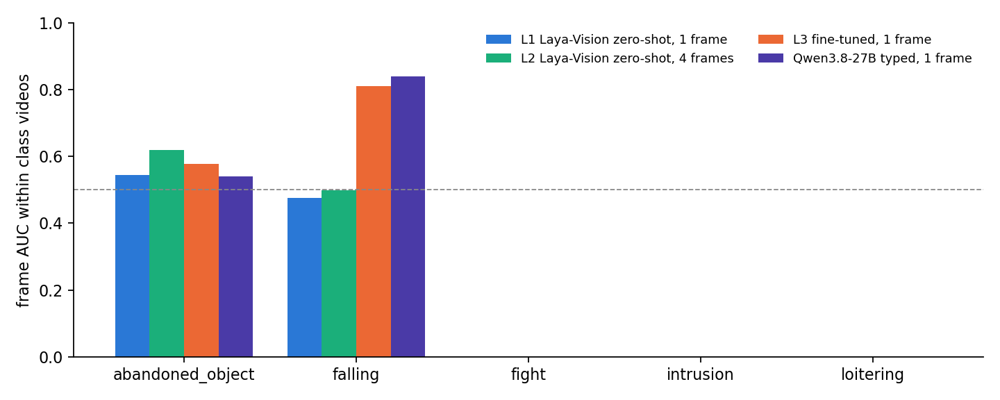
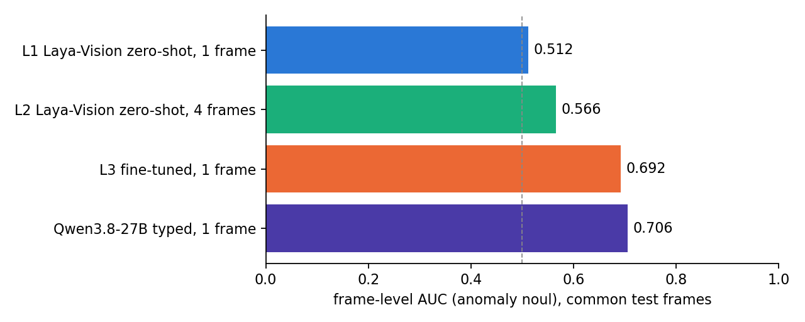
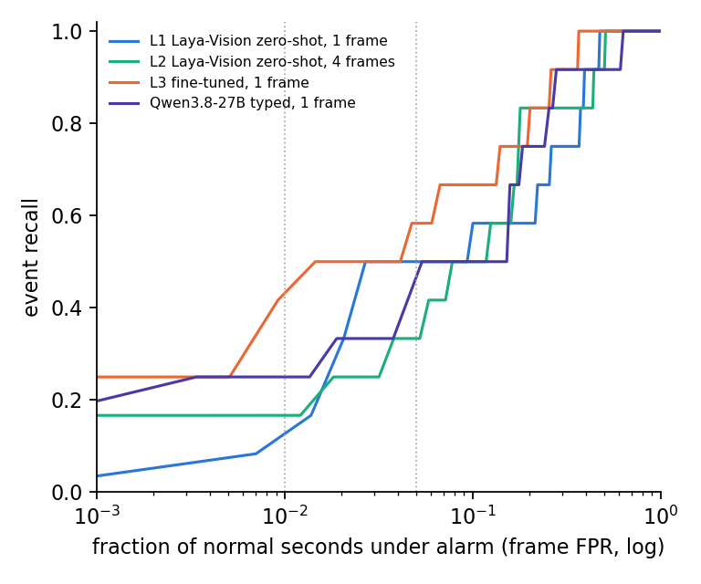
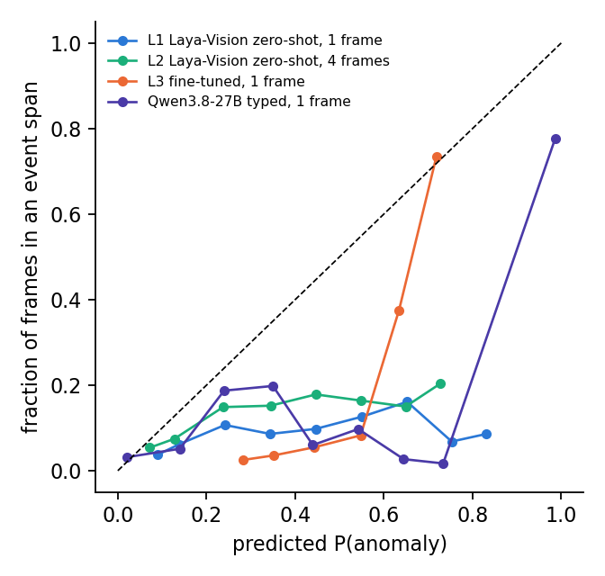
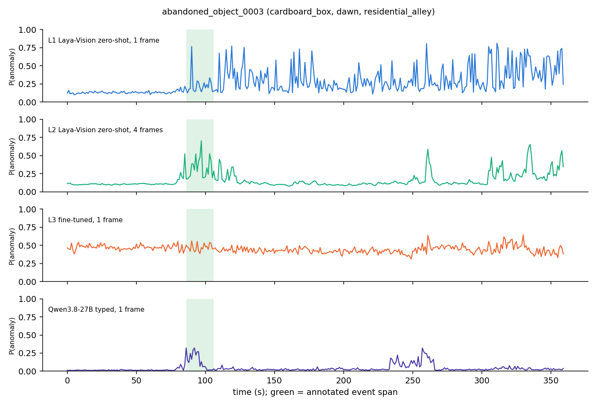
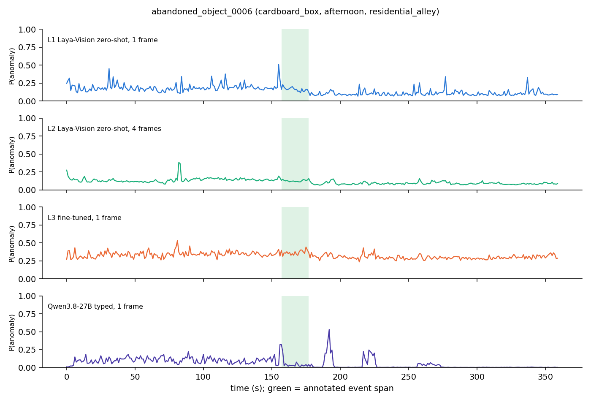
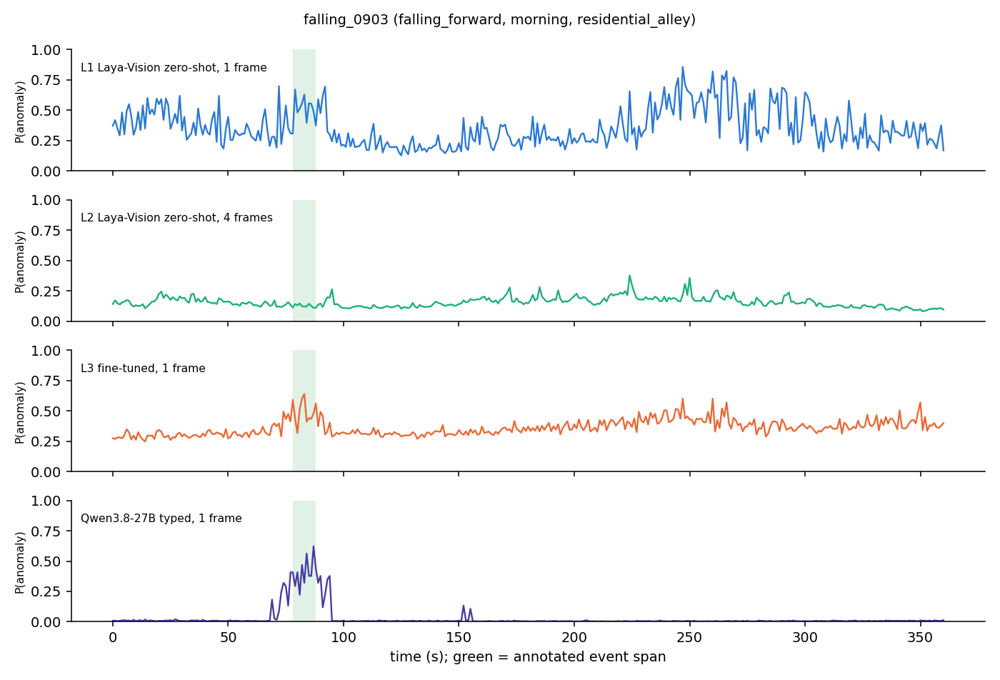
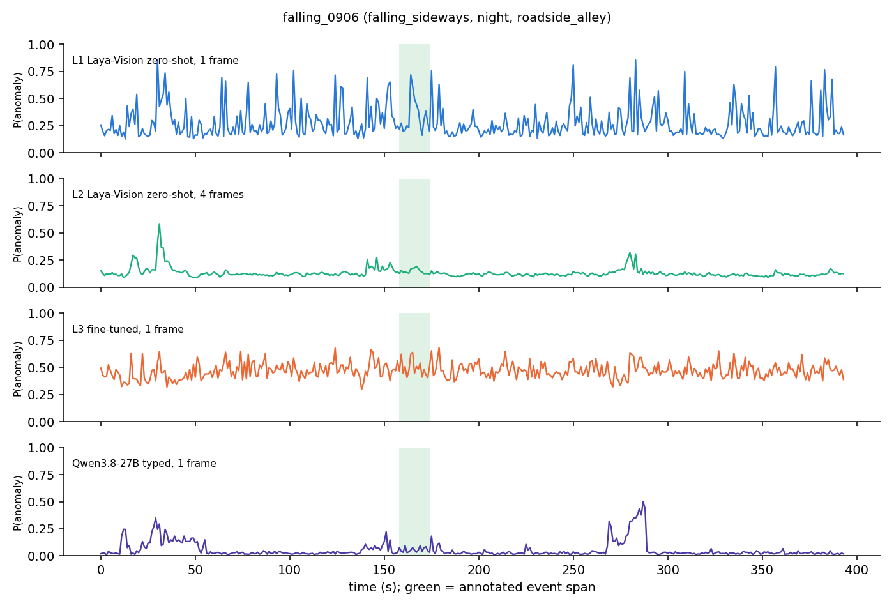

First pass at the mentor's decision-model proposal on the ETRI CCTV dataset: calibrated typed anomaly decisions (noul + choice) from frames with Laya-Vision (201M), zero-shot on single frames (Level 1) and 4-frame windows (Level 2), fine-tuned on the ETRI temporal ground truth (Level 3), against Qwen3.8-27B answering the same typed questions per frame. Two of five classes so far (abandoned_object, falling; 125 videos). Zero-shot Laya-Vision is at chance (frame AUC 0.51–0.59); 30 minutes of fine-tuning on one MIG slice brings the 1-frame model to AUC 0.73 on 41 test videos, level with Qwen3.8-27B (0.71 on its 12 videos) and ahead of it in event recall at a 1 % false-positive budget (39 % vs 25 %), at 150 ms per decision.
The proposal replaces "a large video VLM describes the scene" with a small decision model: the model is given a state (one or several frames) and typed questions, and returns calibrated probabilities in one forward pass, without generating text. This experiment runs the first three levels of that proposal on the ETRI CCTV dataset and compares them with a large VLM asked the same typed questions.
No footage is shown on this page: the ETRI videos are not public. Score curves, metrics and prompts only.
Can a 200M-parameter typed decision model, run on every frame of a CCTV stream, separate annotated abnormal events from normal footage, and how far is it from a 27B VLM on the same questions? Does a short temporal window help, and does fine-tuning on the ETRI temporal ground truth close the gap?
thaitea/laya-vision @ f2fe3c1 (CC BY-NC-SA 4.0 weights); Qwen3.8-27B @ 1d4bf0f, BF16,
non-thinking mode.anomaly (noul: P(yes)) and event (6-way choice:
normal + 5 classes). Anomaly score = the noul; secondary score = 1 − P(normal).Window decisions are attributed to the latest frame. Fine-tuning trains the decision head and the last 4 language-model layers;
each training frame contributes one noul example (anomaly label) and one choice example (class inside the span, normal outside).
noul / choice heads){
"anomaly": {
"type": "noul",
"instructions": "Is an abnormal or suspicious event happening in this CCTV footage right now (a fight, a person falling, an object being abandoned, loitering, or an intrusion)?"
},
"event": {
"type": "choice",
"instructions": "What is happening in this CCTV footage?",
"criteria": {
"normal": "nothing unusual: people walking by, standing briefly, or an empty scene",
"fight": "two or more people fighting or physically attacking each other",
"falling": "a person falls or collapses to the ground",
"abandoned_object": "a person puts down a bag, box or other object and walks away leaving it behind",
"loitering": "a person lingers or wanders around the same place for a long time without a clear purpose",
"intrusion": "a person climbs over a fence or wall, or enters a closed or restricted area"
}
}
}outdoor CCTV camera, one frame outdoor CCTV camera, 4 consecutive frames 1 s apart, oldest first; judge the latest frame
Is an abnormal or suspicious event happening in this CCTV footage right now (a fight, a person falling, an object being abandoned, loitering, or an intrusion)? A) yes B) no Answer with a single letter. What is happening in this CCTV footage? A) normal: nothing unusual: people walking by, standing briefly, or an empty scene B) fight: two or more people fighting or physically attacking each other C) falling: a person falls or collapses to the ground D) abandoned_object: a person puts down a bag, box or other object and walks away leaving it behind E) loitering: a person lingers or wanders around the same place for a long time without a clear purpose F) intrusion: a person climbs over a fence or wall, or enters a closed or restricted area Answer with a single letter.
Common test frames scored by every run (4385 frames). AUC / AP / ECE use the anomaly noul; per-class AUC is computed within that class's test videos only; ms = median wall-clock per decision (Laya-Vision on one MIG slice, Qwen on a full H200). The secondary score 1 − P(normal) and the all-frames numbers are in the expandable tables.
| Run | AUC | AP | ECE | recall @1 % FPR | alarms/h @1 % | recall @5 % FPR | ms |
|---|---|---|---|---|---|---|---|
| L1 · Laya-Vision zero-shot, 1 frame | 0.512 | 0.059 | 0.159 | 0.08 | 23.5 | 0.50 | 150 |
| L2 · Laya-Vision zero-shot, 4 frames | 0.566 | 0.082 | 0.064 | 0.17 | 13.9 | 0.33 | 526 |
| L3 · Laya-Vision fine-tuned, 1 frame | 0.692 | 0.246 | 0.360 | 0.42 | 25.3 | 0.58 | 150 |
| Reference · Qwen3.8-27B typed questions, 1 frame | 0.706 | 0.269 | 0.093 | 0.25 | 1.7 | 0.33 | 220 |
Per-class frame AUC (anomaly noul), computed inside each class's test videos:
| Run | abandoned_object | falling |
|---|---|---|
| L1 · Laya-Vision zero-shot, 1 frame | 0.544 | 0.476 |
| L2 · Laya-Vision zero-shot, 4 frames | 0.620 | 0.499 |
| L3 · Laya-Vision fine-tuned, 1 frame | 0.577 | 0.810 |
| Reference · Qwen3.8-27B typed questions, 1 frame | 0.541 | 0.839 |
Event recall: an event counts as detected if any second inside its span scores ≥ threshold. Because the runs' score scales differ, the threshold is chosen per run as the best one that flags at most 1 % (resp. 5 %) of normal seconds (frame false-positive rate); "false alarms / h" is the number of alarm onsets per hour of normal footage at that 1 % operating point. Fixed thresholds (0.5 / 0.7 / 0.9) are in the expandable tables below.




Score traces for test videos (first two of each class). The annotated span is shaded; a good detector rises inside it and stays low elsewhere.




normal on 99.3 % of frames outside the spans, but inside the spans its choice matches the video's class only 18 % of the time (it says normal there too); the fine-tuned Laya matches 49 % (35 % on common frames) and still says normal on 89 % of the normal frames.On the two classes available so far the decision-model route works as a mechanism: a 201M typed model fine-tuned for half an hour on one MIG slice reaches the frame AUC of a 27B VLM asked the same questions (0.73 vs 0.71), beats it in event recall at a fixed false-positive budget, and decides in 150 ms per frame. Zero-shot it is useless, and 4 s of temporal context has not helped yet. The absolute numbers are modest (AUC 0.73, abandoned_object at chance, calibration broken by the temperature refit), two of five classes are covered, and Qwen was scored on 12 of the 41 test videos, so this is a first pass that says the route is worth continuing, not a result.
experiments/cctv-decision-model/ in the interactive_model project (data_index.py, frames.py, run_laya.py, run_qwen.py, finetune.py, evaluate.py, make_figures.py)cctv_decision (torch 2.6 cu124, transformers 5.17, laya-vision @ 9e1e241 editable); Qwen3.8-27B in the env-qwen venv (torch 2.8 cu128, transformers 5.17)python experiments/cctv-decision-model/data_index.py sbatch submit_jobs/cctv_decision_frames_laya.slurm # MIG: 1 fps frames + L1/L2 zero-shot sbatch submit_jobs/cctv_decision_qwen.slurm # H200: Qwen3.8-27B reference (6 test videos per class) sbatch submit_jobs/cctv_decision_finetune.slurm # MIG: L3 fine-tunes + scoring python experiments/cctv-decision-model/evaluate.py && python experiments/cctv-decision-model/make_figures.py python experiments/cctv-decision-model/build_page.py